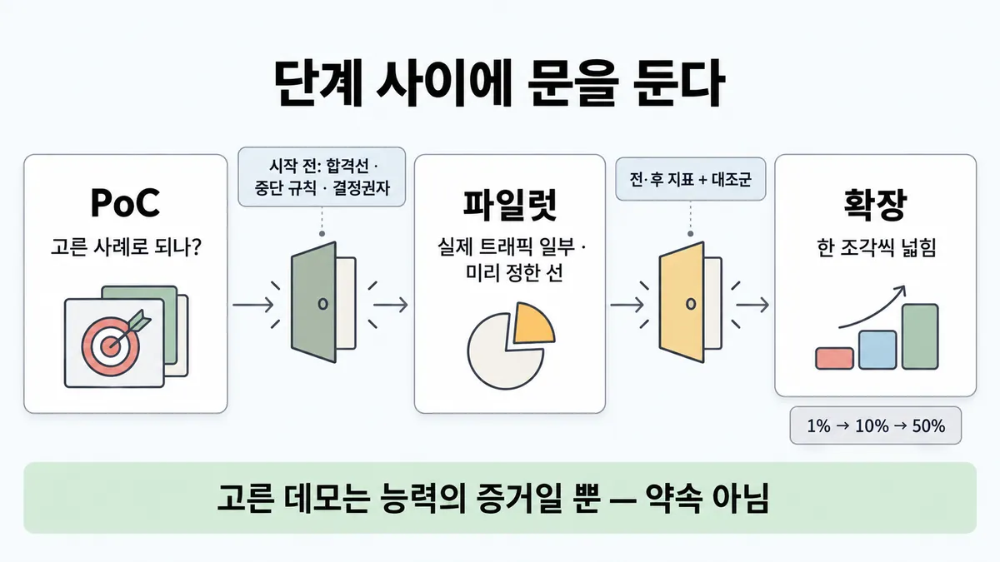
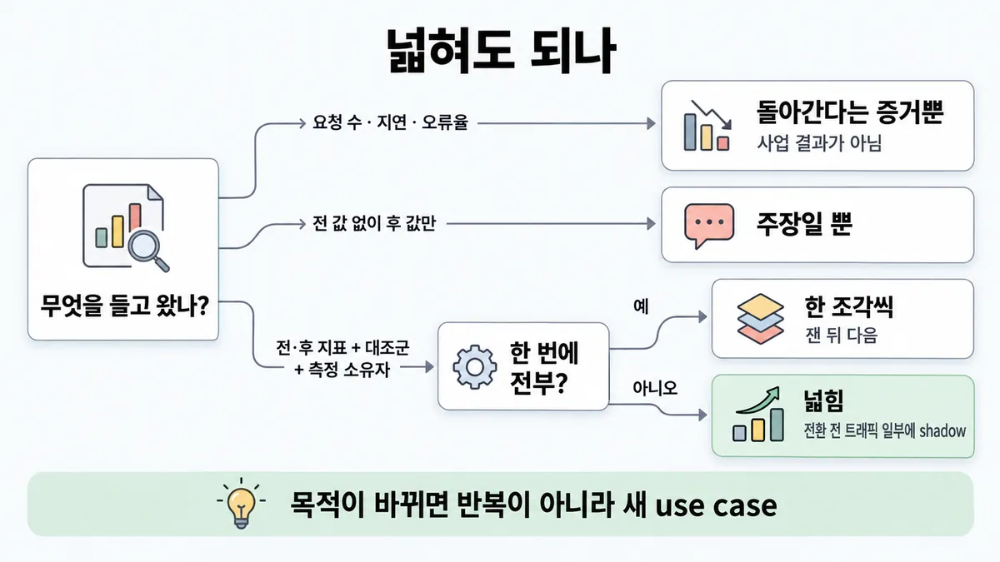
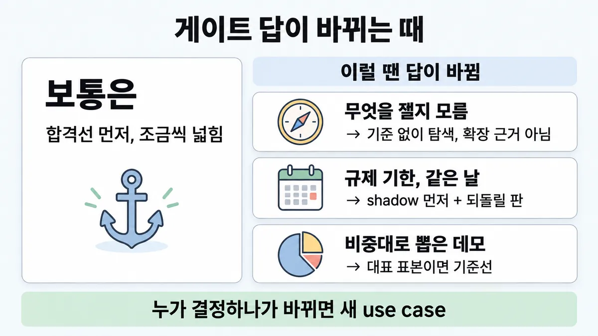

■ PoC → 파일럿 → 확장 게이트
표시가 없는 문장은 공식 문서에서 확인한 내용이에요. 다른 표시는 읽는 법
왜 배우나 — 시험이 요구하는 것
시험 목표 6.5 수명주기 지원 · D6 사람·문서 14%Support lifecycle phases (discovery, design, handoff, monitoring, iteration)
이 개념으로 푸는 판단 (할 수 있어야 하는 것)
- 6.3① "AI 답변이 항상 정확하다고 계약서에 넣어 달라" — 무엇을 약속하나? — 기대치 맞추기 (100% 대신 측정된 SLO + 사람 안전망)
- 6.1① "완벽한 계약 검토기를 만들어 달라" — 아키텍트의 첫 행동은? — 해법(모델·프롬프트·에이전트)보다 디스커버리 먼저
- 1.6② 도입 효과를 무엇으로 증명하나? — 과제 성능 지표와 사업 영향 지표를 나눠 목표치 정하기
한눈에
게이트는 단계와 단계 사이의 문이다. 단계는 셋이다.
- PoC : 고른 사례로 "되나?" 를 본다
- 파일럿(pilot) : 실제 트래픽 일부에서 미리 정한 선을 넘는지 본다
- 확장 : 단계적으로 넓힌다
문마다 들어가는 조건을 **들어가기 전에** 정한다 업계 일반 단계 이름·게이트 구성은 Anthropic 문서 없음
공식 문서에서 가장 가까운 것은 아래다 (좁은 문맥이다. 게이트로 넓힌 것은 해석이다)
- 프로토타입 단계를 지나 운영(production)에서 커지기 시작하면 eval 없이 개발하는 방식이 무너진다
- 프로토타입에서 운영으로 가면 비용이 핵심 설계 제약이 된다
- 최종 고른 구성은 전환 전에 트래픽 일부에 shadow 로 돌린다
5단계 이름과 되돌아갈 곳은 ■ lifecycle 루프 에 있다. 변경마다 eval 은 ■ 변경마다 eval 다시 에 있다. 사업 지표 목록은 ■ impact metrics 에 있다. 여기는 단계 **사이의 문**을 다룬다. 들어가는 조건 · 넓힐 근거 · 새 목적 판정이다
비유 카나리 배포 승격 조건과 같다. 오류율·지연 선과 자동 중단 조건을 배포 전에 건다. 그리고 1%, 10%, 50% 로 한 단씩 올린다. "스테이징에서 잘 돌았으니 전체 배포" 가 속이는 습관이다


ELI5
새 놀이기구를 여는 순서예요.
- 먼저 직원 몇 명이 타 봐요. "움직이긴 하네" 까지만 알 수 있어요.
- 손님을 받기 전에 "몇 분 안에 끝나야 통과, 한 번이라도 멈추면 닫음, 결정은 누가" 를 먼저 정해요.
- 그다음 손님 일부만 태워 보고, 정한 선을 넘는지 봐요.
- 넘으면 줄 하나씩 늘려요. 한꺼번에 다 열지 않아요.
- 놀이기구를 식당으로 바꾸면, 그건 새 가게라서 처음부터 다시 정해요.
개념 설명
원리
세 단계는 묻는 것이 다르다 (업계 일반 — 단계 정의는 공식 문서 없음)
- PoC : 고른 사례로 "되나?" 를 묻는다. 능력의 증거다.
- 파일럿 : 실제 트래픽 일부와 좁힌 권한에서 "미리 정한 선을 넘나?" 를 묻는다. 가설 검증이다.
- 확장 : 단계적으로 넓히며 "다른 입력에서도 유지되나?" 를 묻는다.
- 공식 근거 : 프로토타입 단계를 지나 운영에서 커지기 시작하면 eval 없이 개발하는 방식이 무너진다 (demystifying-evals). 프로토타입에서 운영으로 가면 비용이 핵심 설계 제약이 된다 (optimizing-cost-intelligence).
왜 기준을 먼저 (업계 일반)
- 결과를 본 뒤에 기준을 정하면, 기준이 결과에 맞춰진다. 그래서 사후에 판정할 수 없다.
- 중단 규칙이 없으면 나쁜 일이 생겨도 "조금만 더" 가 된다.
- 결정할 사람이 없으면 모두 의견만 내고 아무도 go/no-go 를 안 낸다.
왜 데모는 측정이 아닌가
- 고른 사례는 잘 되는 쪽으로 기울어 있다. 실제 트래픽은 분포가 다르다.
- 공식 근거는 셋이다.
- 트래픽의 대표 표본으로 비교한다 (thinking-steering-and-cost).
- 운영 로그에서 실제 트래픽 비중대로 과제를 뽑는다 (optimizing-cost-intelligence).
- 자동 eval 도 실사용 패턴과 어긋나면 거짓 확신을 준다 (demystifying-evals).
왜 단계적으로
- 부서·문의 종류마다 입력이 다르다. 그래서 한 곳에서 성립한 가정이 다른 곳에서 깨질 수 있다 (업계 일반).
- 공식 근거 : 최종 고른 구성은 전환 전에 트래픽 일부에 shadow 로 돌린다. 전환 뒤에도 eval suite 를 계속 돌린다 (optimizing-cost-intelligence). 사용량이 갑자기 늘면 가속 한도로 429 가 난다. 그래서 트래픽은 조금씩 올린다 (rate-limits en-full).
왜 전·후 + 대조군
- "요청 수·지연·오류율" 은 돌아간다는 증거다. 사업이 나아졌다는 증거는 목표 사업 지표의 전·후다.
- 전·후만 보면 그 사이의 다른 변화(성수기 · 인력 충원)와 구분하지 못한다. 그래서 대조군(control)을 둔다. 공식 근거 : A/B 는 교란을 통제하고 실사용 결과를 측정한다 (demystifying-evals). A/B 는 기준 모델·이전 버전과 비교한다 (define-success en-full). 대조군을 확장 근거로 넓힌 것은 해석이다.
핵심 질문 두 개
- 이 단계에 들어가기 전에 "통과 · 중단 · 누가 정하나" 를 적어 뒀나?
- 넓히자는 근거가 "돌아간다" 인가, "사업이 나아졌다(대조군과 함께)" 인가?
규칙과 판단


갈림길
①②③ 파일럿 들어가기 [6.5] [6.3①]
아직 약속하지 않는다
고른 데모는 능력의 증거일 뿐이다. 대표 표본으로 기준선을 잰 뒤 약속한다 업계 일반. 트래픽의 대표 표본을 돌려 비교한다
기준부터 정한다
기준 없이 돈 파일럿은 사후에 판정할 수 없다. 할인·예산 마감이 있어도 기준을 정한 뒤 다시 돌린다 업계 일반
파일럿으로 간다
실제 트래픽 일부에서 읽기·초안 권한만 준다 업계 일반. 기본은 읽기 전용이고, 바꾸는 행동 전에는 사람이 승인한다 (Claude Code 문맥이다. 파일럿 권한으로 넓힌 것은 해석이다)
④⑤ 넓혀도 되나 [6.5] [1.6②]
돌아간다는 증거뿐이다
사업 결과가 아니다. 목표 사업 지표의 전·후와 대조군을 든다 업계 일반. 자세한 것은 ■ impact metrics 에 있다
주장일 뿐이다
전 값만 있으면 바람일 뿐이다. 후 값만 있으면 근거 없는 주장이다 업계 일반
단계적으로 넓힌다
부서·문의 종류를 하나 더 넓히고, 잰 뒤 다음으로 간다 업계 일반. 트래픽은 조금씩 올린다
넓힌다
전환 전에 트래픽 일부에 shadow 로 돌린다. 전환 뒤에도 eval suite 를 계속 돌린다
⑥ 새 목적인가 [6.5] [6.1①]
반복 안에서 다룬다
반복(iteration)은 설계로 돌아간다. 자세한 것은 ■ lifecycle 루프 에 있다
새 use case 다
서비스가 건강해도 새 use case 다. 결정권자 · 기준선 · 제약부터 다시 정한다 업계 일반. 자세한 것은 ■ discovery 산출물 에 있다
흐름
그림 속 이름·금액·시간·토큰 수는 예시예요. 공식 한도·동작은 카드 본문 값이 기준.
장면 글로 보기
칸 : PoC → 게이트 → 파일럿 → 확장
규칙 (게이트) : 합격선 · 중단 규칙 · 결정할 사람을 시작 전에
질문 : 이 결과로 넓혀도 될까?
① 기준 먼저, 그다음 단계적 확장 ✓
- 시작 : PoC — 쪽지 : 고른 문의 12건 / 12건 정답
- 기준 : PoC → 게이트 : 시작 전에 정한다 — 쪽지 : 합격: 처리 8분↓ / 중단: 오안내 1건 / 결정: 지원본부장
- 파일럿 : 게이트 → 파일럿 : 실제 트래픽 일부에 초안만 쓴다 — 쪽지 : 반품 문의 10% / 상담원 확인 뒤 / 발송
- 근거 : 파일럿 → 확장 : 전·후 지표와 대조군을 든다 — 쪽지 : 처리 14분 → 8분 / 대조군 13분 / 측정: 운영팀장
- 끝 : 확장 근거는 전·후 지표, 대조군, 측정 담당자다. 넓힐 때는 단계적으로 넓힌다
② 데모로 바로 확장 ≠
- 시작 : PoC — 쪽지 : 고른 문의 12건 / 12건 정답
- 건너뜀 : 게이트
- 건너뜀 : 파일럿
- 약속 : PoC → 확장 : 고른 사례 정확도를 약속한다 ≠ — 말 : “정확도 100% 예요.”
- 틀림 : 확장 : 실제 입력 분포를 만난다 — 쪽지 : 전국 실제 문의 / 정답 81%
- 끝 : 고른 데모는 능력의 증거일 뿐이다. 대표 표본으로 기준선을 잰 뒤 약속한다
③ 기준 없이 돈 파일럿 ≠
- 시작 : PoC — 쪽지 : 고른 문의 12건 / 12건 정답
- 건너뜀 : 게이트
- 파일럿 : PoC → 파일럿 : 기준 없이 시작한다 — 쪽지 : 반품 문의 10% / 합격선: 없음
- 판정 : 파일럿 → 확장 : 사후에 판정할 수 없다 ≠ — 말 : “좋았던 것 같은데요…”
- 끝 : 기준 없이 돈 파일럿은 사후에 판정할 수 없다. 기준을 정한 뒤 다시 돌린다
규칙 원문 ①②③④⑤⑥ (갈림길로 그린 규칙)
-
세 단계는 묻는 것이 다르다 업계 일반 단계 정의는 공식 문서 없음 [6.5]
- PoC : 고른 사례로 "되나?" 를 묻는다
- 파일럿 : 실제 트래픽 일부와 좁힌 권한에서 미리 정한 선을 넘나?
- 운영 : 전체에 적용한다
공식 근거 : 수동 테스트·dogfooding·직감으로도 꽤 간다. 그러나 프로토타입 단계를 지나 운영에서 커지기 시작하면 eval 없이 개발하는 방식이 무너진다
테스트 운영 환경에 배포해 eval 을 돌리기 전에는 프롬프트가 얼마나 잘 되는지 알기 어렵다 (고객지원 가이드)
-
파일럿 게이트 = 시작 전에 정한다 : 아래 다섯 가지를 정한다 업계 일반 [6.5] [6.3①]
- 합격선 : 예 반품 한 건 처리 시간 · 상담원 수정률
- 중단 규칙 : 예 규정과 다른 환불 안내 1건이면 정지
- go/no-go 를 내릴 지정된 한 사람과 나머지의 발언권
- 권한 경계 : 읽기·초안만
- 검토 피드백 받는 모양
기준 없이 돈 파일럿은 사후에 판정할 수 없다. 할인·예산 마감이 있어도 기준을 정한 뒤 다시 돌린다 업계 일반
권한 : 기본은 읽기 전용이다. 코드·시스템을 바꾸는 행동 전에는 사람이 승인한다 (Claude Code 문맥이다. 파일럿 권한으로 넓힌 것은 해석이다)
자세한 것은 ■ human-in-the-loop 게이트 위치 에 있다
합격선 문장 모양은 ■ 성공 기준 에 있다. 결정권자 한 명은 ■ discovery 산출물 에 있다
반대 쪽 : 모델 벤치마크 세부 · 확정 SLA 문구 · on-call 순번은 뒤 게이트의 일이다. 파일럿 전에 다 요구하지 않는다 업계 일반. SLA 는 ■ SLA 조항 쓰기 에 있다
-
고른 데모 ≠ 측정 : 고른 사례 몇 건의 정확도는 "되나" 의 증거일 뿐이다. 대표 표본으로 기준선을 잰 뒤 약속한다 업계 일반 원리는 아래 [6.5] [6.3①]
공식 근거는 아래다
- 트래픽의 대표 표본을 돌려 비교한다 (thinking 조정 문맥)
- 운영 로그에서 실제 트래픽 비중대로 과제를 뽑는다 (비용 최적화 문맥)
- 자동 eval 은 실사용 패턴과 어긋나면 거짓 확신을 준다
- 몇 번 해 보고 코너 케이스 한두 개 고치는 것도 사용자의 예상 밖 입력에는 모자라다 (Skilljar)
"데모에서 잘 됨" 함정의 본편은 ■ 변경마다 eval 다시 에 있다
파일럿 성공은 가설 검증이지 운영 검증이 아니다. 그래서 넓히기 전에 먼저 묻는다. "작은 규모에서 성립한 어떤 가정이 큰 규모에서 깨지나?"(입력 분포 · 엣지 케이스 · 지원 부담 · 비용). 라이선스 · 교육 일정은 그 뒤다 업계 일반
공식 근거 : 운영 모니터링은 출시 뒤 분포 변화와 예상 못 한 실패를 잡는다. 자세한 것은 ■ 검증 층 에 있다
-
넓히기는 단계적으로 : 부서·문의 종류를 하나 더 넓힌다. 다른 입력 분포에서 정확도·지연이 유지되는지 잰 뒤 다음으로 간다 업계 일반 [6.5]
공식 근거 : 최종 고른 구성은 전환 전에 트래픽 일부에 shadow 로 돌린다. 전환 뒤에도 eval suite 를 계속 돌린다 (모델 구성 고르기 문맥)
사용량이 갑자기 늘면 acceleration limit(가속 한도)으로 429 가 난다. 그래서 트래픽은 조금씩 올린다. 자세한 것은 ■ API 오류별 대응 에 있다
구버전·신버전을 함께 돌리며 트래픽을 조금씩 옮기는 방법은 ■ 에이전트 상태·실패·배포 에 있다
되돌리기 어려운 결정(사람 검토 팀 해체 · 옛 시스템 폐기)은 단계적으로 줄인다. 지금 합의한 정지 선으로 되돌릴 길을 남긴다. "기준 통과했으니 예정대로 한 번에" 는 되돌리는 비용을 숨긴다 업계 일반
비용은 운영 볼륨으로, 첫 청구서 전에 본다. 프로토타입에서 운영으로 가면 비용이 핵심 설계 제약이 된다. 가장 좋은 모델이 규모에서는 너무 비쌀 수 있다. 지출 임계값 알림을 건다
그래서 전체 월 문의량으로 다시 센다. 캐싱·모델 조합·알림 설정(무엇을 언제 울릴지)을 넓히기 전에 말한다 업계 일반. 자세한 것은 ■ per-request cost · ■ 최적화 lever 하나 고르기 에 있다
-
넓힐 근거 : 목표 사업 지표의 전·후(같은 방법으로 측정), 대조군(control), 측정 담당자를 든다 업계 일반 [6.5] [1.6②]
요청 수 · 지연 · 오류율은 돌아간다는 증거일 뿐이다. 사업 결과가 아니다 업계 일반. 사업 지표 목록(AHT · deflection · CSAT)은 ■ impact metrics 에 있다
공식 근거 : A/B 는 실제 사용자 결과(유지율 · 과제 완료율)를 재고 교란을 통제한다. A/B 는 기준 모델·이전 버전과 비교한다
그래서 대조군 없는 전·후 비교는 그 사이 다른 변화(성수기 · 인력)와 구분하지 못한다 (해석). 자세한 것은 ■ 검증 층 에 있다
전 값만 있으면 바람일 뿐이다. 후 값만 있으면 근거 없는 주장이다 업계 일반. 후 값에 운영 시간이 모자라면 측정 시점을 마일스톤으로 잡고 담당자·대조군 기록부터 남긴다 업계 일반
-
새 목적 = 새 use case : 서비스가 건강해도 목적이 바뀌면 반복이 아니라 새 use case 다. 결정권자 · 기준선 · 제약부터 다시 정한다 업계 일반 [6.5] [6.1①]
목적이 바뀌는 예 : 배송 안내에서 환불 승인 여부 결정으로 바뀐다. 문의 요약에서 상담원 순위 매기기로 바뀐다
전면 거절도, 기존 릴리스 절차로 밀어 넣기도 아니다. 다시 범위를 잡는다 업계 일반. 자세한 것은 ■ discovery 산출물 에 있다. 요구가 바뀐 증거가 있을 때 discovery 로 가는 것은 ■ lifecycle 루프 · 규칙 ③ 에 있다
게이트 순서 : eval 셋과 합의된 trade-off(절충)는 handoff 계획 앞에 둔다. 되돌리기 절차와 지정된 담당자는 handoff 앞에 둔다 업계 일반. 자세한 것은 ■ handoff 패키지 에 있다
반복(iteration)은 설계로 돌아간다. discovery 로는 요구가 바뀔 때만 간다 (■ lifecycle 루프)
더 깊이 : 판단 규칙 · 상황 변수 (설명)
판단 규칙
| 조건 | 답 | 등급 | 근거 |
|---|---|---|---|
| 파일럿을 곧 시작하는데 합격선·중단 규칙·결정할 사람이 없다 | 기준부터 정한다. 마감이 있어도 기준을 정한 뒤 다시 돌린다 | 업계 일반 | 후보 절 규칙 1. 공식 문장이 없다 |
| 고른 사례 몇 건이 다 맞았다 | 약속 전에 대표 표본으로 기준선을 잰다 | 업계 일반 · 확인(대표 표본 원리) | thinking-steering · optimizing-cost · demystifying |
| 파일럿 권한을 정한다 | 읽기·초안만 준다. 바꾸는 행동 전에는 사람이 승인한다 | (Claude Code 기본값) · 해석(파일럿으로) | safe-trustworthy-agents |
| 파일럿이 성공했고 넓히기 전이다 | 규모를 키우면 깨지는 가정(입력 분포 · 엣지 케이스 · 지원 부담 · 비용)부터 본다 | 업계 일반 | — |
| 전환 방식을 정한다 | 트래픽 일부에 shadow 로 돌리고 조금씩 올린다. 전환 뒤에도 eval 을 돌린다 | optimizing-cost · rate-limits en-full | |
| 넓힐 근거로 요청 수·지연·오류율을 든다 | 돌아간다는 증거뿐이다. 사업 지표 전·후, 대조군, 측정 담당자를 든다 | 업계 일반 · 확인(A/B 교란 통제) | demystifying |
| 운영 볼륨 비용을 본다 | 첫 청구서 전에 전체 문의량으로 다시 센다. 지출 임계값 알림을 건다 | (비용 핵심 제약 · 알림) · 업계 일반(시점) | optimizing-cost · usage-cost-api |
| 되돌리기 어려운 결정이다(검토 팀 해체) | 단계적으로 줄이고 정지 선을 지금 합의한다 | 업계 일반 | — |
| 건강한 서비스에 새 목적이 생겼다 | 새 use case 다. 결정권자 · 기준선 · 제약부터 정한다 | 업계 일반 | ■ discovery 산출물 |
상황 변수
| 변수 | 값 | 답 쪽 | 등급 | 근거 |
|---|---|---|---|---|
| 게이트 기준 | 시작 전에 적었다 | 파일럿 결과로 판정할 수 있다 | 업계 일반 | 판단 규칙 1 |
| 게이트 기준 | 없거나 돌리며 정한다 | 사후에 판정할 수 없다. 기준을 정하고 다시 돌린다 | 업계 일반 | 판단 규칙 1 |
| 근거 표본 | 고른 사례다 | 능력의 증거다 | 업계 일반 | 판단 규칙 2 |
| 근거 표본 | 대표 표본이다 | 기준선이 된다. 약속할 수 있다 | 판단 규칙 2 | |
| 들고 온 지표 | 요청 수 · 지연 · 오류율 | 돌아간다는 것만 보인다 | 업계 일반 | 판단 규칙 6 |
| 들고 온 지표 | 사업 지표 전·후 + 대조군 | 넓힐 근거가 된다 | 업계 일반 · 확인(대조군) | 판단 규칙 6 |
| 전·후 값 | 전만 / 후만 | 바람이다 / 근거 없는 주장이다 | 업계 일반 | — |
| 넓히는 폭 | 한 번에 전부 | 단계적으로 넓히고 shadow 로 돌린다 | 판단 규칙 5 | |
| 목적 | 같다 (품질·비용 개선) | 반복 안에서 다룬다 | 업계 일반 | ■ lifecycle 루프 |
| 목적 | 바뀐다 (안내에서 결정으로) | 새 use case 다 | 업계 일반 | 판단 규칙 9 |
| 트래픽 | 적다 (하루 수십 건) | A/B 대신 전·후와 비교 팀, transcript 표본을 쓴다 | 업계 일반 | ■ 검증 층 · 규칙 ③ |
연습 문제
반품 문의 답변 초안 파일럿을 지원팀 한 곳(상담원 14명)에서 6주 돌렸다. 팀장은 주간 요청 수 · 평균 지연 · 오류율 그래프돌아간다는 지표를 들고 와 "문제없으니 전국 상담 센터 5곳으로 넓히자"고 한다. 도입 전 반품 한 건 처리 시간은 잰 적이 없다전 값 없음. 넓히기 전에 무엇이 있어야 할까?
시험 대비
함정
- "고른 문의 12건이 다 맞았으니 정확도 100% 로 약속" 은 함정이다. 고른 데모는 능력의 증거일 뿐이다. 대표 표본으로 기준선을 잰다 업계 일반. 자세한 것은 ◆ 100% 약속 vs 측정된 SLO + 사람 안전망 에 있다. 실사용 패턴과 어긋나면 거짓 확신을 준다
- "할인 마감이 있으니 기준은 돌려 보며 정하자" 는 함정이다. 기준 없이 돈 파일럿은 사후에 판정할 수 없다 업계 일반
- "파일럿이 잘 됐으니 라이선스 · 교육 일정부터" 는 함정이다. 규모를 키우면 깨지는 가정부터 본다 업계 일반
- "요청 수 · 지연 · 오류율이 좋으니 확장" 은 함정이다. 그것은 돌아간다는 증거뿐이다. 사업 지표 전·후와 대조군을 든다 업계 일반. A/B 는 교란을 통제한다
- "도입 뒤 처리 시간 8분이니 성공" 은 함정이다. 전 값과 대조군이 없으면 주장일 뿐이다 업계 일반
- "한 번에 전국 트래픽으로 전환" 은 함정이다. 단계적으로 넓히고 전환 전에 shadow 로 돌린다. 갑자기 늘리면 가속 한도로 429 가 난다
- "기준을 넘었으니 사람 검토 팀을 한 번에 해체" 는 함정이다. 되돌릴 길을 남긴다 업계 일반
- "비용은 첫 청구서를 보고 조정" 은 함정이다. 운영 볼륨으로 미리 센다. 지출 임계값 알림을 건다
- "요약하던 서비스가 잘 도니 순위 매기기도 다음 릴리스로" 는 함정이다. 새 목적은 새 use case 다 업계 일반
- 반대쪽 함정도 있다. "파일럿 전에 SLA 문구 · on-call 순번까지 다 갖춰야" 는 함정이다. 그것은 뒤 게이트의 일이다 업계 일반
- 반대쪽 함정이 하나 더 있다. "새 목적이니 전면 거절" 은 함정이다. 다시 범위를 잡는다 업계 일반
신호
"Support lifecycle phases (discovery, design, handoff, monitoring, iteration)" (가이드 목표 6.5)
"But after the early prototyping stages, once an agent is in production and has started scaling, building without evals starts to break down."
"When a workload moves from prototype to production, cost becomes a first-class design constraint."
"It's hard to know how well your prompt works without deploying it in a test production setting and running evaluations." (원문엔 running evaluations 에 링크)
"Run the winner in shadow on a traffic slice before cutover, then keep the suite running."
"To avoid hitting acceleration limits, ramp up your traffic gradually and maintain consistent usage patterns."
"Run a representative sample of your traffic with and without the guidance"
"Can create false confidence if it doesn’t match real usage patterns"
"Measures actual user outcomes (retention, task completion)" · "Controls for confounds"
"A/B testing: Compare performance against a baseline model or earlier version."
"Budget monitoring: Set up alerts for spending thresholds"
"Test the prompt a few times and tweak it to handle a corner case or two. While better than option 1, users will often provide very unexpected outputs that you haven't considered." (Skilljar)


더 깊이 : 뒤집히는 때 · 오답 재료 (설명)
뒤집히는 때
1. 기준 없이 돌려도 되는 때 — 탐색 파일럿
- 조건 : 무엇을 재야 할지부터 모른다. 상담원 3명이 2주간 초안을 써 보며 "어디서 시간이 드나" 를 찾는 것이 목적이다.
- 판단 : 이것은 파일럿이 아니라 PoC 쪽 탐색이다. 기준 없이 돌려도 된다. 그러나 결론은 "되나?" 와 "무엇을 잴까" 까지만 낸다. 넓힐 근거로는 못 쓴다. 그다음 파일럿은 여기서 찾은 지표로 기준을 먼저 정하고 시작한다.
- 등급 : 업계 일반
- 근거 : 공식 문장은 없다. "eval 과제를 적어 보면 요구가 짓기에 충분히 구체적인지 드러남"(demystifying-evals)과 같은 방향이다.
2. 전·후만으로 넓혀도 되는 때
- 조건 : 반품 처리 시간이 22분에서 7분으로 줄었다(약 68% 감소). 같은 기간 다른 센터는 21분에서 20분이 됐다.
- 판단 : 다른 센터가 사실상의 대조군이다. 차이가 이렇게 크고 대조군 쪽이 거의 그대로면 "성수기 때문" 같은 다른 설명이 약하다. 대조군을 따로 짜지 않았어도 비교 가능한 쪽이 있으면 근거가 된다. 둘 다 같은 방법으로 쟀는지는 확인한다.
- 등급 : 계산 (15 ÷ 22 ≈ 68%) · 업계 일반 (판단)
- 근거 : A/B 의 교란 통제(demystifying-evals)를 넓힌 해석이다.
3. 한 번에 넓혀야 하는 때
- 조건 : 규제 기한 때문에 모든 센터가 같은 날 새 환불 안내 문구로 바꿔야 한다.
- 판단 : 단계적으로 넓힐 시간이 없으면, 대신 전환 전에 트래픽 일부에 shadow 로 돌려 본다(안내는 옛 방식으로 하고, 새 방식 답은 비교만 한다). 중단 규칙과 되돌릴 버전을 미리 둔다.
- 등급 : (shadow) · 업계 일반(적용)
- 근거 : optimizing-cost-intelligence
4. 데모 값으로 약속해도 되는 때?
- 조건 : 고른 사례가 아니라, 지난달 운영 로그에서 비중대로 뽑은 문의 300건으로 "데모" 를 했다. 정답은 276건(92%)이다.
- 판단 : 이름이 데모여도 대표 표본이면 기준선이 된다. 가를 기준은 "데모냐" 가 아니라 "표본이 실제 트래픽 비중을 따랐나" 다.
- 등급 : (대표 표본 원리) · 계산 (276 ÷ 300)
- 근거 : optimizing-cost-intelligence · thinking-steering-and-cost
5. 새 목적인데 새 use case 까지는 아닌 때
- 조건 : 반품 안내 Agent 가 교환 안내도 하게 한다. 둘 다 "안내" 이고, 결정·통지는 여전히 상담원이 한다.
- 판단 : 목적(안내)이 같고 결정 주체도 같으면 범위 확장이다. 반복 안에서 eval 과제를 더하고 단계적으로 넓힌다. 안내에서 결정 통지로 바뀌는 것처럼 누가 결정하나 가 바뀌면 새 use case 다.
- 등급 : 업계 일반
- 근거 : 공식 문장은 없다. 결정 앞 사람 승인은 ■ human-in-the-loop 게이트 위치 에 있다.
오답 재료
| 오답 | 왜 끌리나 | 왜 틀리나 | 등급 | 근거 |
|---|---|---|---|---|
| "고른 문의가 다 맞았으니 정확도 100% 약속" | 숫자가 좋다 | 고른 데모는 능력의 증거다. 실사용과 어긋나면 거짓 확신을 준다 | 업계 일반 · 확인 | demystifying · ◆ 100% 약속 vs 측정된 SLO + 사람 안전망 |
| "데모 값에서 여유폭을 빼고 약속" | 신중해 보인다 | 고른 표본에서 뺀 값도 측정이 아니다. 대표 표본으로 기준선을 잰다 | 업계 일반 | 판단 규칙 2 |
| "할인 마감이니 기준은 돌리며 정함" | 일정이 급하다 | 사후에 판정할 수 없다 | 업계 일반 | 판단 규칙 1 |
| "데모에서 잘 됐으니 바로 배포" | 눈으로 봤다 | 몇 번 테스트로는 예상 밖 입력에 모자라다 | Skilljar 287731 · ■ 변경마다 eval 다시 | |
| "파일럿 성공 → 라이선스·교육 일정부터" | 다음 단계 같다 | 규모를 키우면 깨지는 가정부터 본다 | 업계 일반 | — |
| "요청 수·지연·오류율이 좋으니 확장" | 운영 지표가 정상 범위다 | 돌아간다는 증거일 뿐이다. 사업 결과가 아니다 | 업계 일반 | ■ impact metrics |
| "도입 뒤 8분이니 성공" | 숫자가 있다 | 전 값·대조군이 없으면 주장일 뿐이다 | 업계 일반 | — |
| "기준 통과, 예정대로 검토 팀 해체" | 계획대로다 | 되돌리는 비용을 숨긴다 | 업계 일반 | — |
| "비용은 첫 청구서 보고" | 실제 값을 보고 정한다 | 프로토타입에서 운영으로 가면 비용이 핵심 설계 제약이 된다 | optimizing-cost | |
| "전국 트래픽을 하루에 전환" | 빠르다 | 단계적으로 넓히고 shadow 로 돌린다. 갑자기 늘리면 가속 한도로 429 가 난다 | optimizing-cost · rate-limits en-full | |
| "잘 도는 서비스니 결정 통지도 같은 릴리스로" | 같은 시스템이다 | 새 목적은 새 use case 다 | 업계 일반 | — |
| "파일럿 전에 SLA·on-call 순번까지" | 꼼꼼해 보인다 | 뒤 게이트의 일이다 | 업계 일반 | — |
참고
함께 보기
더 깊이 : 출처 · 상태 · 미해결 (참고)
출처
- 가이드 목표 6.5 공식 시험 가이드 v1.0
- 가이드 목표 1.6 공식 시험 가이드 v1.0
- demystifying-evals
- optimizing-cost-intelligence
- customer-support-chat
- rate-limits
- thinking-steering-and-cost
- define-success
- usage-cost-api
- safe-trustworthy-agents
- Skilljar API 287731
상태
- 업계 일반 16줄(어떻게 기준 — 단계 정의 · 게이트 항목 · 기준 없이 다시 · 뒤 게이트의 일 · 데모 ≠ 측정 · 가설 검증 · 단계적 확장 · 되돌릴 길 · 운영 볼륨 예측 · 전·후 + 대조군 + 담당자 · 돌아간다는 증거 · 바람/주장 · 측정 시점 예약 · 새 use case · 다시 범위 · 게이트 순서)
- 해석 3곳(게이트로 넓힘 · Claude Code 권한 → 파일럿 권한 · 대조군 없는 전·후)
미해결
- PoC · 파일럿 · 확장 게이트 구성 전체는 공식 문장을 못 찾았다. 검색 대상은
ccarp/raw/official-docs/en-*.md이고, 검색어는 "pilot|roll out|rollout|gradual|phased|shadow|traffic slice|slice of" 다(스크래치w3_grep.py). 게이트 뜻은 0건이다. 잡힌 것은 아래뿐이다. 제외 = 받지 않은 공식 페이지 · ko 판.- shadow 1(optimizing-cost en 546)
- "ramp up your traffic gradually"(rate-limits en-full 92)
- "piloting and scaling"(service-tiers en 4, Standard 티어 설명일 뿐)
- rainbow deployments(multi-agent-research-system en 74)
- 아래는 공식 문장이 없다. 그래서 업계 일반으로 둔다.
- 중단 규칙
- go/no-go 담당자
- 한 부서씩
- 결과 문서 항목(전·후 + 대조군 + 담당자)
- 새 목적 = 새 use case
- 후보 절 "공식 근거 후보" 10개는 모두 원문에서 찾았다. 단 세 곳은 다른 문맥이다. 게이트로 넓힌 것은 해석이다.
en-safe-trustworthy-agents.md19줄 : Claude Code 기본 권한 문맥en-thinking-steering-and-cost.md87줄 : thinking 조정 문맥optimizing-cost-intelligence546줄 : 모델 구성 고르기 문맥
- 후보 절의 "운영 볼륨 = 파일럿의 10~100배" 는 공식 숫자가 없다. 그래서 카드에는 배수 없이 "전체 월 문의량으로 다시 센다" 만 남겼다.
- 후보 절 규칙 5 의 게이트 순서(eval 셋·trade-off 가 handoff 계획 앞, 되돌리기·담당자가 handoff 앞)는 공식 문장이 없다. 가이드 목표 6.5 는 단계 이름만 준다.